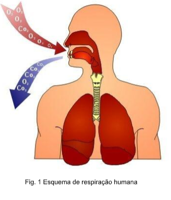
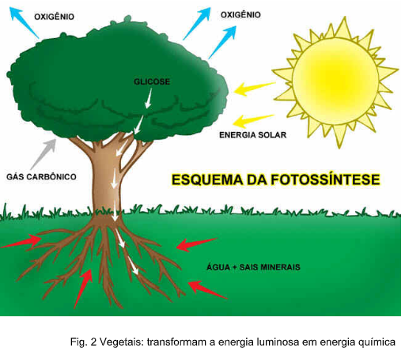
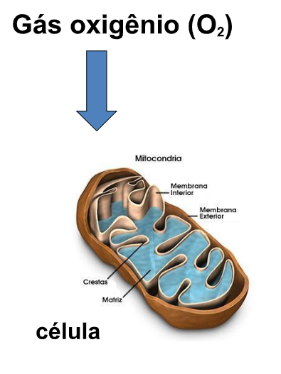

Capítulo 1
Máquinas Simples e Formas de Propagação do Calor na Indústria Metalúrgica
CONTEXTUALIZANDOA indústria da metalurgia básica compreende cinco grupos de atividades: produção de ferro-gusa e de ferroligas, siderurgia, fabricação de tubos, exceto em siderúrgicas, metalurgia de metais não ferrosos e fundição. Durante esses processos, ocorrem transformações de materiais desde a extração da matéria prima até a fabricação de objetos.
A história da metalurgia
Tudo começou com a descoberta do cobre na Anatólia (hoje Turquia). Os objetos eram moldados só na base da pancada. Acredita-se que a inauguração da metalurgia propriamente dita tenha ocorrido totalmente por acaso. A teoria mais aceita é a de que, por acidente, um minério de cobre tenha caído nas brasas de uma fornalha; a “heureca” se deu quando alguém notou o derretimento e o posterior endurecimento do material numa forma diferente.
Fonte: https://super.abril.com.br/historia/como-eram-produzidos-os-primeiros-objetos-metalicos-criados-pelo-homem/ O que são transformações químicas? Quais as diferenças entre as transformações química das transformações físicas? Vamos descobrir! (RE)CONSTRUINDO CONHECIMENTOSCaro aluno, Ao longo deste capítulo, explorando temas relacionados à Indústria Metalúrgica, propõe-se entender o que são transformações químicas e físicas, bem como o significado de matéria.
Seres vivos e o ar Existe uma reação química no processo de respiração: os seres vivos retiram o oxigênio O 2 e emitem gás carbônico CO 2 .
Fotossíntese
Processo químico em que os seres vivos que possuem clorofila usam água H 2 O, gás carbônico CO 2 . e luz para produzir => ALIMENTO e liberar o OXIGÊNIO O 2.
PARA ENTENDER MAIS...
 Transformação química é aquela que ocorre somente uma vez. Exemplo um fósforo queimado, não voltará ao que era antes. Transformação física é aquela que pode voltar a ser o que era antes. Exemplo a água líquida fervendo na chaleira vaporiza e depois retorna líquida em forma de chuva.
VOCÊ JÁ PENSOU SOBRE ISSO?
O que é o ar? Ele existe? Podemos vê-lo?
O ar ocupa espaço, por isso tende a se movimentar. Portanto o ar é matéria. Essa movimentação denominamos de corrente de ar ou vento!
O ar é feito de uma mistura de gases:
78% nitrogênio (N 2 )
21% oxigênio (O 2 )
1% diversos gases
E na indústria metalúrgica?A metalúrgica atua num campo mais amplo, produzindo vários tipos de metais: alumínio cobre titânio e ferro, por exemplo. Alumínio (Al) É obtido industrialmente a partir do óxido de alumínio, cuja matéria prima principal é a bauxita. O alumínio é utilizado na fabricação de utensílios domésticos, na produção de fios para eletricidade, e também na indústria automobilística, uma que, por possuir baixa densidade, ajuda na construção de veículos mais leves. Benzeno (C6H6) É um líquido incolor que entra em ebulição a 80°C. Na indústria, é usado como solvente e matéria-prima na fabricação de explosivos e corantes.
Fonte: http://educacao.globo.com/artigo/materias-primas-da-industria-quimica.htmlResolva as questões a seguir e verifique suas respostas no final do capítulo.
1) Diferencie transformação química de transformação física dando exemplos
2) De que maneira o organismo humano pode realizar transformações químicas?
3) O ar existe? Podemos vê-lo? Explique.
4) Cite exemplos de transformações químicas na indústria metalúrgica
O QUE APRENDIA partir de números que expressam a produção da Indústria Metalúrgica no Rio Grande do Sul em seus cinco grupos de produção, foi relembrado como os seres transformam a matéria para sobreviverem. Foram retomados, também, as diferenças entre transformação química e física, bem como a composição do ar no planeta Terra. Relembramos alguns tópicos da transformação de materiais na indústria metalúrgica
1. Transformação física não altera a matéria, portanto pode ser reversível, já a transformação química altera e é irreversível.
2. O organismo pode realizar transformações químicas através da respiração celular e alimentação, nesse caso o oxigênio (O2) e o Nitrogênio (N2) são processados.
3. O ar existe sim, pois ele é matéria. Ocupa lugar no espaço, quando ocorre deslocamento de ar chamamos de vento.
4. Na indústria metalúrgica existem muitas transformações química, entre elas cita-se a produção de alumínio (Al), extraído da bauxita e do benzeno, utilizado na produção de solventes.